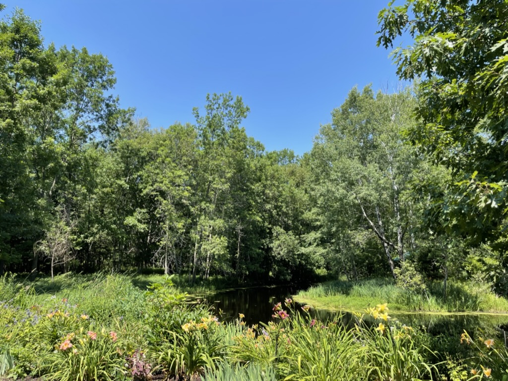

Cromwell, Minnesota
January 29, 2023
A few summers ago, my partner and her brother's family decided to rent an Airbnb in northern Minnesota. Cromwell, Minnesota is 40 minutes west of Duluth, Minnesota. It's a very small town, but what it doesn't lack is luscious greenery. It lies just west of the Font Du Lac State Forest. From towering pines to beautiful birch trees, the Airbnb was covered completely in plant life. In the center of the property was a pond with an island. The pond was adorned with lilypads and surrounded by flowers and assorted plant life. In the photo, the bright blue skies are evidence of the absent of clouds and the sun's rays reflecting off the water. This set the perfect scene for this photograph. It's beauty during the day was not missed at night. With no city lights, the stars were extremely visable. We highly recommend the quiet stay in Northern Minnesota.
Stingray City in the Caymans
January 23, 2023

Disney Cruises are my partner and I's favorite type of trip. The most recent cruise we took was to the Western Caribbean in May of 2022. One of the ports we stopped at was in George Town, Grand Cayman in the Cayman Islands. One very popular port adventure is visiting Stingray City. Decades ago, fishermen would dump their old chum and clean their fish over the calm waters of the sandbars. Southern stingrays began congregating in the area to feast. Over time, divers figured out they could feed the stingrays by hand. While the practice of throwing over chum and cleaning fish does not exist in the area today, the stingrays have been conditioned by the sound of the boats. They continue to come to the area where many tourists and divers purposely bring these magnificent creatures food. We had the opportunity to not only feed the stingrays, but to also hold them. I was able to capture many underwater photos. The one above is one of my favorites. It seems these two stingrays have a close relationship. Speaking of close relationships, according to local superstition, kissing a stingray can bring 7 years good luck. We did partake in that custom as well. I should note, I immediately dropped my cell phone into the water after this excursion. I am not convinced on the good luck.